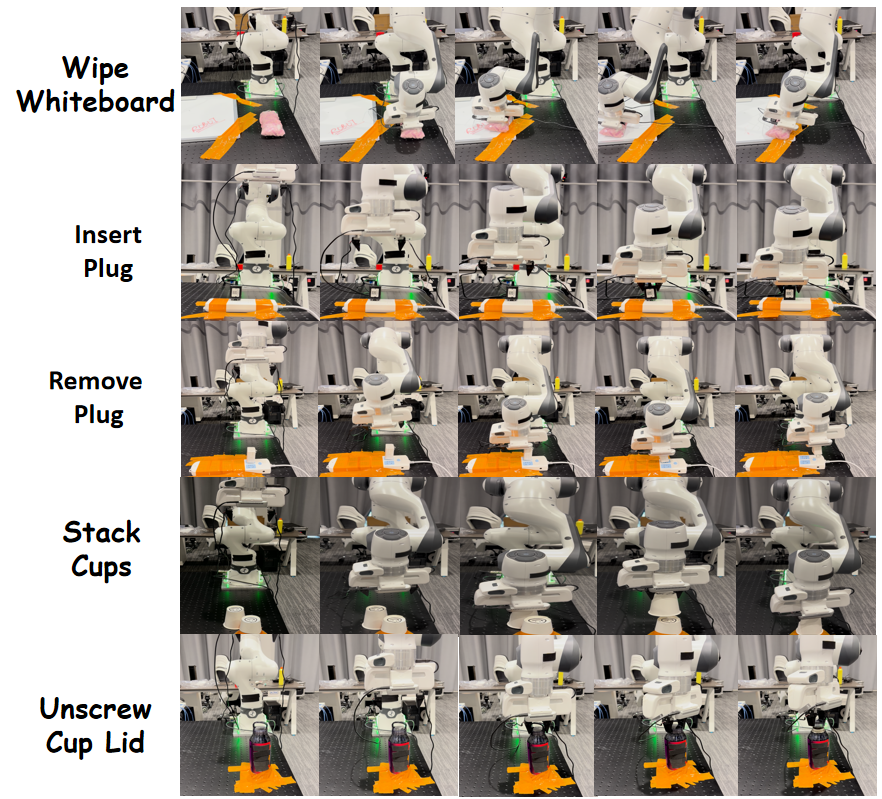

Preprint, 2026
TacDyn-WAM: Learning Implicit Tactile Dynamics in a Heterogeneous Visuo-Tactile World Action Model
† Corresponding author

Abstract
World action models improve robotic manipulation by conditioning actions on predicted futures, yet existing tactile variants largely inherit video-generation pipelines that reconstruct future tactile observations through iterative denoising. Such prediction can become unreliable under deployment drift: small changes in contact position or force may substantially alter tactile pixels even when the underlying contact evolution remains predictable.
We introduce TacDyn-WAM, a heterogeneous visuo-tactile world action model that predicts implicit tactile dynamics rather than reconstructing future tactile observations. It learns TacRep, a dynamics-aware tactile target space trained through masked spatio-temporal prediction on tactile clips and regularized by relational structure distillation. A visual expert and an Implicit Tactile Dynamics Expert predict future visual and tactile representations in separate target spaces while interacting through joint attention; the tactile expert predicts future representations and their changes at multiple horizons in a single forward pass, and a read-only tactile memory supplies the current tactile state.
On UniVTAC, TacDyn-WAM achieves an average success rate of 81.5% using only the provided demonstrations. On five real-robot tasks, it reaches 71.0% average success, and modest-scale pretraining raises it to 85.0%.
Method
Instead of reconstructing future tactile pixels, TacDyn-WAM predicts contact evolution in a representation space designed for tactile dynamics.


Results
TacDyn-WAM is competitive with models using large-scale visuo-tactile pretraining while training only on the provided UniVTAC demonstrations.
UniVTAC average success rate (%)
Comparison among methods without large-scale visuo-tactile trajectory pretraining.
Real-World Experiments
We evaluate five contact-rich manipulation tasks using a Franka Research 3 arm with vision-based tactile sensors on both fingers.

BibTeX
@article{wang2026tacdynwam,
title = {TacDyn-WAM: Learning Implicit Tactile Dynamics in a
Heterogeneous Visuo-Tactile World Action Model},
author = {Wang, Enyi and Wang, Mingxin and Shi, Quan and others},
year = {2026}
}